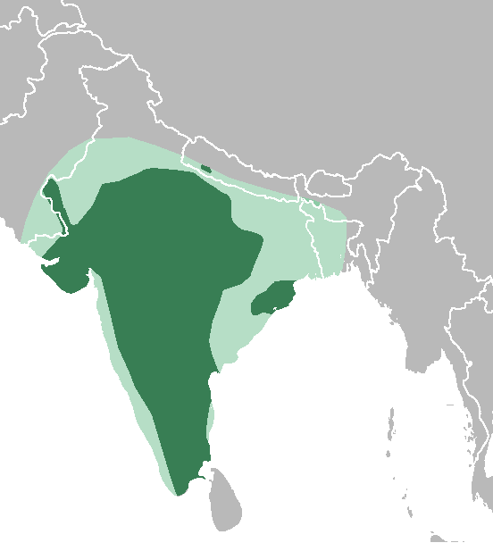
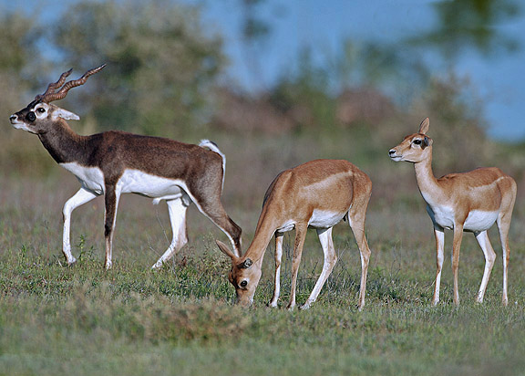

<!DOCTYPE html>
<html lang="en">
<head>
    <meta charset="UTF-8">
    <meta http-equiv="X-UA-Compatible" content="IE=edge">
    <meta name="viewport" content="width=device-width, initial-scale=1.0">
    <title>Document</title>
</head>
<style>
    .info{
        padding: 0cm 1cm;
        font-size: 20px;
        text-align: justify;
    }
</style>
<body>
    <div id="google_translate_element"></div>

    <script type="text/javascript">
    function googleTranslateElementInit() {
      new google.translate.TranslateElement({pageLanguage: 'en'}, 'google_translate_element');
    }
    </script>
    
    <script type="text/javascript" src="//translate.google.com/translate_a/element.js?cb=googleTranslateElementInit"></script>

</html>
<div class="info"><h1>Blackbuck</h1><hr>
<p> The blackbuck (Antilope cervicapra), also known as the Indian antelope, is an antelope native to India and Nepal. It inhabits grassy plains and lightly forested areas with perennial water sources. It stands up to 74 to 84 cm (29 to 33 in) high at the shoulder. Males weigh 20–57 kg (44–126 lb), with an average of 38 kg (84 lb). Females are lighter, weighing 20–33 kg (44–73 lb) or 27 kg (60 lb) on average. Males have 35–75 cm (14–30 in) long, ringed horns, though females may develop horns as well. The white fur on the chin and around the eyes is in sharp contrast with the black stripes on the face. The coats of males show a two-tone colouration; while the upper parts and outsides of the legs are dark brown to black, the underparts and the insides of the legs are white. Females and juveniles are yellowish fawn to tan. The blackbuck is the sole living member of the genus Antilope and was scientifically described by Carl Linnaeus in 1758. Two subspecies are recognized.
</p>
<p>
The blackbuck is active mainly during the day. It forms three type of small groups, female, male, and bachelor herds. Males often adopt lekking as a strategy to garner females for mating. While other males are not allowed into these territories, females often visit these places to forage. The male can thus attempt mating with her. The blackbuck is a herbivore and grazes on low grasses, occasionally browsing as well. Females become sexually mature at the age of eight months, but mate no earlier than two years of age. Males mature later, at 1.5 years. Mating takes place throughout the year. Gestation is typically six months long, after which a single calf is born. The lifespan is typically 10 to 15 years.</p>
<p>
The antelope is native to and found mainly in India, while it is locally extinct in Pakistan and Bangladesh. Formerly widespread, only small, scattered herds are seen today, largely confined to protected areas. During the 20th century, blackbuck numbers declined sharply due to excessive hunting, deforestation, and habitat degradation. The blackbuck has been introduced in Argentina and the United States. In India, hunting of blackbuck is prohibited under Schedule I of the Wildlife Protection Act of 1972. The blackbuck has significance in Hinduism; Indian and Nepali villagers do not harm the antelope.</p>

<h2>Etymology</h2><hr>
<p>The scientific name of the blackbuck is Antilope cervicapra. Its generic name stems from the Latin word antalopus ("horned animal").[2][3] The specific name cervicapra is composed of the Latin words cervus ("deer") and capra ("she-goat").[2][4] The vernacular name "blackbuck" is a reference to the dark brown to black colour of the dorsal (upper) part of the coat of the males.[5] The earliest recorded use of this name dates back to 1850.[6] Alternative names for the blackbuck are "Indian antelope",[7] kadiyal, kala hiran, krishna mriga in Kannada, krishnasaar in Hindi; kalvit in Marathi; krishna jinka in Telugu); and iralai maan in Tamil</p>
<h2>Taxonomy and evolution</h2>
<p>The blackbuck is the sole living member of the genus Antilope and is classified in the family Bovidae. The species was described and given its binomial name by Swedish zoologist Carl Linnaeus in the 10th edition of Systema Naturae in 1758.[10][11] Antilope also includes fossil species, such as Antilope subtorta and Antilope intermedia</p>
<p>Antilope, Eudorcas, Gazella, and Nanger form a clade within their tribe Antilopini. A 1995 study of the detailed karyotype of Antilope suggested that within this clade, Antilope is closest to the Gazella group.[13] A 1999 phylogenetic analysis confirmed that Antilope is the closest sister taxon to Gazella,[14] although an earlier phylogeny, proposed in 1976, placed Antilope as sister to Nanger.[15] In a more recent revision of the phylogeny of the Antilopini on the basis of sequences from multiple nuclear and mitochondrial loci in 2013, Eva Verena Bärmann (of the University of Cambridge) and colleagues re-examined the phylogenetic relationships and found Antilope and Gazella to be sister genera distinct from the sister genera Nanger and Eudorcas</p>
<p>Two subspecies are recognised,[18][19] although they might be independent species:[20]

    A. c. cervicapra (Linnaeus, 1758), known as the southeastern blackbuck, occurs in southern, eastern, and central India. The white eye ring of the male is narrow above the eye and the neck is all black in the male and the white on the underside is largely restricted to the belly in both males and females. The black leg stripe is well defined and reaches all along the leg.
    A. c. rajputanae Zukowsky, 1927, known as the northwestern blackbuck, occurs in northwestern India. Males have a grey sheen to the dark parts during the breeding season. The white on the underside extends up to half way on the sides of the body and the lower base of the neck of males is white. The white eye ring is broad all around the eye with the leg-stripe going only down to the shanks.</p>
    <h2>Genetics</h2><hr>
    
    <p>The blackbuck shows variation in its diploid chromosome number. Males have 31-33, while females have 30-32. Males have an XY1Y2 sex chromosome.[20][21] Unusually large sex chromosomes had earlier been described only in a few species, all of which belonged to Rodentia. However, in 1968, a study found that two artiodactyls, the blackbuck and the sitatunga, too, showed this abnormality. Generally, the X chromosome constitutes 5% of the haploid chromosomal complement, but the X chromosome of the blackbuck this percentage is 14.96. Portions of both peculiarly large chromosomes show delayed replication.</p>
</body>
</div>